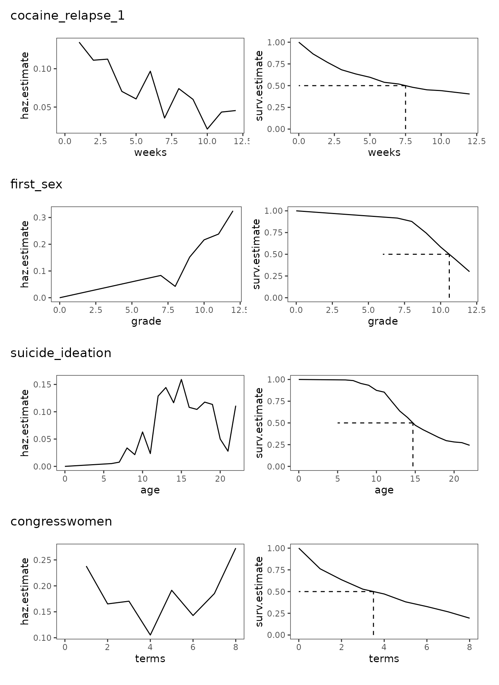

Chapter 10: Describing discrete-time event occurrence data
Source:vignettes/articles/chapter-10.Rmd
chapter-10.Rmd
library(alda)
library(dplyr)
library(tidyr)
library(purrr)
library(ggplot2)
library(patchwork)
library(survival)
library(broom)10.1 The life table
In Section 10.1 Singer and Willett (2003) introduce the life table—the primary tool for for summarizing the sample distribution of event occurrence—using a subset of data from Singer (1993), who measured how many years 3941 newly hired special educators in Michigan stayed in teaching between 1972 and 1978. Teachers were followed for up to 13 years or until they stopped teaching in the state.
For this example we return to the teachers data set
introduced in Chapter 9, a person-level data frame with 3941 rows and 3
columns:
-
id: Teacher ID. -
years: The number of years between a teacher’s dates of hire and departure from the Michigan public schools. -
censor: Censoring status.
teachers
#> # A tibble: 3,941 × 3
#> id years censor
#> <fct> <dbl> <dbl>
#> 1 1 1 0
#> 2 2 2 0
#> 3 3 1 0
#> 4 4 1 0
#> 5 5 12 1
#> 6 6 1 0
#> 7 7 12 1
#> 8 8 1 0
#> 9 9 2 0
#> 10 10 2 0
#> # ℹ 3,931 more rowsAs Singer and Willett (2003) discuss, a life table tracks the event histories of a sample of individuals over a series of contiguous intervals—from the beginning of time through the end of data collection—by including information on the number of individuals who:
- Entered each interval.
- Experienced the target event during an interval.
- Were censored at the end of an interval.
We can either construct a life table “by hand” by first converting the person-level data set to a person-period data set, then cross-tabulating time period and event-indicator variables; or by using a prepackaged routine. Because we will be constructing a life table “by hand” in Section 10.5, here we demonstrate the prepackaged routine approach.
Conceptually, the life table is simply the tabular form of a survival function (see Section 10.2); thus, an easy way to construct a life table is to first fit a survival function to the person-level data set, then use the summary of the fit as a starting point to construct the remainder of the table.
We can fit a survival function using the survfit()
function from the survival package. The model formula
for the survfit() function takes the form
response ~ terms, where the response must be a “survival
object” created by the Surv() function. For right-censored
data, the survival object can be created by supplying two unnamed
arguments to the Surv() function corresponding to
time and event variables, in that order. Note
that we can recode a censor variable into an
event variable by reversing its values. For 0-1 coded data,
we can write the event status as event = censor - 1.
teachers_fit <- survfit(Surv(years, 1 - censor) ~ 1, data = teachers)
summary(teachers_fit)
#> Call: survfit(formula = Surv(years, 1 - censor) ~ 1, data = teachers)
#>
#> time n.risk n.event survival std.err lower 95% CI upper 95% CI
#> 1 3941 456 0.884 0.00510 0.874 0.894
#> 2 3485 384 0.787 0.00652 0.774 0.800
#> 3 3101 359 0.696 0.00733 0.682 0.710
#> 4 2742 295 0.621 0.00773 0.606 0.636
#> 5 2447 218 0.566 0.00790 0.550 0.581
#> 6 2229 184 0.519 0.00796 0.504 0.535
#> 7 2045 123 0.488 0.00796 0.472 0.504
#> 8 1642 79 0.464 0.00800 0.449 0.480
#> 9 1256 53 0.445 0.00811 0.429 0.461
#> 10 948 35 0.428 0.00827 0.412 0.445
#> 11 648 16 0.418 0.00848 0.401 0.435
#> 12 391 5 0.412 0.00870 0.396 0.430Next, we’ll collect the summary information from the
survfit object into a tibble using the tidy()
function from the broom package. For now we will
exclude any statistical summaries from the life table, focusing
exclusively on columns related to the event histories of the
teachers data. Note also that the summary information from
the survfit object starts at the time of the first event,
not the “beginning of time”. We can add a “beginning of time” to the
survfit object using the survfit0() function
from the survival package, which (by default) adds a starting time of 0
to the life table.
teachers_lifetable <- teachers_fit |>
survfit0() |>
tidy() |>
select(-c(estimate:conf.low)) |>
mutate(interval = paste0("[", time, ", ", time + 1, ")"), .after = time) |>
rename(year = time)
teachers_lifetable
#> # A tibble: 13 × 5
#> year interval n.risk n.event n.censor
#> <dbl> <chr> <dbl> <dbl> <dbl>
#> 1 0 [0, 1) 3941 0 0
#> 2 1 [1, 2) 3941 456 0
#> 3 2 [2, 3) 3485 384 0
#> 4 3 [3, 4) 3101 359 0
#> 5 4 [4, 5) 2742 295 0
#> 6 5 [5, 6) 2447 218 0
#> 7 6 [6, 7) 2229 184 0
#> 8 7 [7, 8) 2045 123 280
#> 9 8 [8, 9) 1642 79 307
#> 10 9 [9, 10) 1256 53 255
#> 11 10 [10, 11) 948 35 265
#> 12 11 [11, 12) 648 16 241
#> 13 12 [12, 13) 391 5 386As Singer and Willett (2003) discuss, we interpret the columns of the life table as follows:
-
year: Defines the time of each interval using ordinal numbers. -
interval: Defines precisely which event times appear in each interval using the interval notation,[start, end), where each interval includes the starting time and excludes the ending time. -
n.risk: Defines the risk set during each interval; that is, the number of (remaining) individuals who are eligible to experience the target event during an interval. -
n.event: Defines the number of individuals who experienced the target event during an interval. -
n.censor: Defines the number of individuals who were censored during an interval.
Importantly, notice that once an individual experiences the target event or is censored during an interval, they drop out of the risk set in all future intervals; thus, the risk set is inherently irreversible.
10.2 A framework for characterizing the distribution of discrete-time event occurrence data
In Section 10.2 Singer and Willett (2003) introduce three statistics for summarizing the event history information of the life table, which can estimated directly from the life table:
-
Hazard is the fundamental quantity used to assess the risk of event occurrence in each discrete time period. The discrete-time hazard function is the conditional probability that the \(i\)th individual will experience the target event in the \(j\)th interval, given that they did not experience it in any prior interval:
\[ h(t_{ij}) = \Pr[T_i = j \mid T \geq j], \]
whose maximum likelihood estimates are given by the proportion of each interval’s risk set that experiences the event during that interval:
\[ \hat h(t_j) = \frac{n \text{ events}_j}{n \text{ at risk}_j}. \]
-
The survival function is the cumulative probability that the \(i\)th individual will not experience the target event past the \(j\)th interval:
\[ S(t_{ij}) = \Pr[T > j], \]
whose maximum likelihood estimates are given by the cumulative product of the complement of the estimated hazard probabilities across the current and all previous intervals:
\[ \hat S(t_j) = [1 - \hat h(t_j)] [1 - \hat h(t_{j-1})] [1 - \hat h(t_{j-2})] \dots [1 - \hat h(t_1)]. \]
-
The median lifetime is a measure of central tendency identifying the point in time by which we estimate that half of the sample has experienced the target event and half has not, given by:
\[ \text{Estimated median lifetime} = m + \Bigg[ \frac{\hat S(t_m) - .5}{\hat S(t_m) - \hat S(t_{m + 1})} \Bigg] \big( (m + 1) - m \big), \]
where \(m\) is the time interval immediately before the median lifetime, \(\hat S(t_m)\) is the value of the survivor function in the \(m\)th interval, and \(\hat S(t_{m + 1})\) is the value of the survivor function in the next interval.
Using the life table to estimate hazard probability, survival probability, and median lifetime
First, the discrete-time hazard function and the survival function.
Note the use of if-else statements to provide preset values for the
“beginning of time”, which by definition will always be NA
for the discrete-time hazard function and 1 for the
survival function.
teachers_lifetable <- teachers_lifetable |>
mutate(
haz.estimate = if_else(year != 0, n.event / n.risk, NA),
surv.estimate = if_else(year != 0, 1 - haz.estimate, 1),
surv.estimate = cumprod(surv.estimate)
)
# Table 10.1, page 327:
teachers_lifetable
#> # A tibble: 13 × 7
#> year interval n.risk n.event n.censor haz.estimate surv.estimate
#> <dbl> <chr> <dbl> <dbl> <dbl> <dbl> <dbl>
#> 1 0 [0, 1) 3941 0 0 NA 1
#> 2 1 [1, 2) 3941 456 0 0.116 0.884
#> 3 2 [2, 3) 3485 384 0 0.110 0.787
#> 4 3 [3, 4) 3101 359 0 0.116 0.696
#> 5 4 [4, 5) 2742 295 0 0.108 0.621
#> 6 5 [5, 6) 2447 218 0 0.0891 0.566
#> 7 6 [6, 7) 2229 184 0 0.0825 0.519
#> 8 7 [7, 8) 2045 123 280 0.0601 0.488
#> 9 8 [8, 9) 1642 79 307 0.0481 0.464
#> 10 9 [9, 10) 1256 53 255 0.0422 0.445
#> 11 10 [10, 11) 948 35 265 0.0369 0.428
#> 12 11 [11, 12) 648 16 241 0.0247 0.418
#> 13 12 [12, 13) 391 5 386 0.0128 0.412Then the median lifetime. Here we use the slice()
function from the dplyr package to select the time
intervals immediately before and after the median lifetime, then do a
bit of wrangling to make applying the median lifetime equation easier
and clearer.
teachers_median_lifetime <- teachers_lifetable |>
slice(max(which(surv.estimate >= .5)), min(which(surv.estimate <= .5))) |>
mutate(m = c("before", "after")) |>
select(m, year, surv = surv.estimate) |>
pivot_wider(names_from = m, values_from = c(year, surv)) |>
summarise(
surv.estimate = .5,
year = year_before
+ ((surv_before - .5) / (surv_before - surv_after))
* (year_after - year_before)
)
teachers_median_lifetime
#> # A tibble: 1 × 2
#> surv.estimate year
#> <dbl> <dbl>
#> 1 0.5 6.61A valuable way of examining these statistics is to plot their trajectories over time.
teachers_haz <- ggplot(teachers_lifetable, aes(x = year, y = haz.estimate)) +
geom_line() +
scale_x_continuous(breaks = 0:13) +
coord_cartesian(xlim = c(0, 13), ylim = c(0, .15))
teachers_surv <- ggplot(teachers_lifetable, aes(x = year, y = surv.estimate)) +
geom_line() +
geom_segment(
aes(xend = year, y = 0, yend = .5),
data = teachers_median_lifetime,
linetype = 2
) +
geom_segment(
aes(xend = 0, yend = .5),
data = teachers_median_lifetime,
linetype = 2
) +
scale_x_continuous(breaks = 0:13) +
scale_y_continuous(breaks = c(0, .5, 1)) +
coord_cartesian(xlim = c(0, 13))
# Figure 10.1, page 333:
teachers_haz + teachers_surv + plot_layout(ncol = 1, axes = "collect")When examining plots like these, Singer and Willett (2003) recommend looking for patterns in and between the trajectories to answer questions like:
- What is the overall shape of the hazard function?
- When are the time periods of high and low risk?
- Are time periods with elevated risk likely to affect large or small numbers of people, given the value of the survivor function?
10.3 Developing intuition about hazard functions, survivor functions, and median lifetimes
In Section 10.3 Singer and Willett (2003) examine and describe the estimated discrete-time hazard functions, survivor functions, and median lifetimes from four studies that differ by their type of target event, metric for clocking time, and underlying profile of risk:
-
cocaine_relapse_1: A person-level data frame with 104 rows and 4 columns containing a subset of data from Hall, Havassy, and Wasserman (1990), who measured the number of weeks of relapse to cocaine use in a sample of 104 former addicts released from an in-patient treatment program. In-patients were followed for up to 12 weeks or until they used cocaine for 7 consecutive days.cocaine_relapse_1 #> # A tibble: 104 × 4 #> id weeks censor needle #> <fct> <dbl> <dbl> <dbl> #> 1 501 2 0 1 #> 2 502 12 1 0 #> 3 503 1 0 1 #> 4 505 9 0 1 #> 5 507 3 0 1 #> 6 508 2 0 1 #> 7 509 12 1 0 #> 8 510 12 1 1 #> 9 511 1 0 1 #> 10 512 2 0 1 #> # ℹ 94 more rows -
first_sex: A person-level data frame with 180 rows and 5 columns containing a subset of data from Capaldi, Crosby, and Stoolmiller (1996), who measured the grade year of first sexual intercourse in a sample of 180 at-risk heterosexual adolescent males. Adolescent males were followed from Grade 7 up to Grade 12 or until they reported having had sexual intercourse for the first time.first_sex #> # A tibble: 180 × 5 #> id grade censor parental_transition parental_antisociality #> <fct> <dbl> <dbl> <dbl> <dbl> #> 1 1 9 0 0 1.98 #> 2 2 12 1 1 -0.545 #> 3 3 12 1 0 -1.40 #> 4 5 12 0 1 0.974 #> 5 6 11 0 0 -0.636 #> 6 7 9 0 1 -0.243 #> 7 9 12 1 0 -0.869 #> 8 10 11 0 0 0.454 #> 9 11 12 1 1 0.802 #> 10 12 11 0 1 -0.746 #> # ℹ 170 more rows -
suicide_ideation: A person-level data frame with 391 rows and 4 columns containing a subset of data from Bolger and colleagues (1989) measuring age of first suicide ideation in a sample of 391 undergraduate students aged 16 to 22. Age of first suicide ideation was measured with a two-item survey asking respondents “Have you ever thought of committing suicide?” and if so, “At what age did the thought first occur to you?”suicide_ideation #> # A tibble: 391 × 4 #> id age censor age_now #> <fct> <dbl> <dbl> <dbl> #> 1 1 16 0 18 #> 2 2 10 0 19 #> 3 3 16 0 19 #> 4 4 20 0 22 #> 5 6 15 0 22 #> 6 7 10 0 19 #> 7 8 22 1 22 #> 8 9 22 1 22 #> 9 10 15 0 20 #> 10 11 10 0 19 #> # ℹ 381 more rows -
congresswomen: A person-level data frame with 168 rows and 5 columns containing data measuring how long all 168 women who were elected to the U.S. House of Representatives between 1919 and 1996 remained in office. Representatives were followed for up to eight terms or until 1998.congresswomen #> # A tibble: 168 × 5 #> id name terms censor democrat #> <fct> <chr> <dbl> <dbl> <dbl> #> 1 1 Abzug, Bella 3 0 1 #> 2 2 Andrews, Elizabeth 1 0 1 #> 3 3 Ashbrook, Jean 1 0 0 #> 4 4 Baker, Irene 1 0 0 #> 5 5 Bentley, Helen 5 0 0 #> 6 6 Blitch, Iris 4 0 1 #> 7 7 Boggs, Corinne 8 1 1 #> 8 8 Boland, Veronica Grace 1 0 1 #> 9 9 Bolton, Frances 8 1 0 #> 10 10 Bosone, Reva 2 0 1 #> # ℹ 158 more rows
We can plot the discrete-time hazard functions, survivor functions,
and median lifetimes from each of these four studies in a single call
using the pmap() function from the purrr
package.
study_plots <- pmap(
list(
list("cocaine_relapse_1", "first_sex", "suicide_ideation", "congresswomen"),
list(cocaine_relapse_1, first_sex, suicide_ideation, congresswomen),
list("weeks", "grade", "age", "terms"),
list(0, 6, 5, 0)
),
\(.title, .study, .time, .beginning) {
# Get life table statistics.
study_fit <- survfit(Surv(.study[[.time]], 1 - censor) ~ 1, data = .study)
study_lifetable <- study_fit |>
survfit0(start.time = .beginning) |>
tidy() |>
rename(surv.estimate = estimate) |>
mutate(haz.estimate = if_else(time != .beginning, n.event / n.risk, NA))
study_median_lifetime <- study_lifetable |>
slice(max(which(surv.estimate >= .5)), min(which(surv.estimate <= .5))) |>
mutate(m = c("before", "after")) |>
select(m, time, surv = surv.estimate) |>
pivot_wider(names_from = m, values_from = c(time, surv)) |>
summarise(
surv.estimate = .5,
time = time_before
+ ((surv_before - .5) / (surv_before - surv_after))
* (time_after - time_before)
)
# Plot discrete-time hazard and survival functions.
study_haz <- ggplot(study_lifetable, aes(x = time, y = haz.estimate)) +
geom_line() +
xlab(.time)
study_surv <- ggplot(study_lifetable, aes(x = time, y = surv.estimate)) +
geom_line() +
geom_segment(
aes(xend = time, y = 0, yend = .5),
data = study_median_lifetime,
linetype = 2
) +
geom_segment(
aes(xend = .beginning, yend = .5),
data = study_median_lifetime,
linetype = 2
) +
xlab(.time)
wrap_elements(panel = (study_haz | study_surv)) + ggtitle(.title)
}
)
# Figure 10.2, page 340:
wrap_plots(study_plots, ncol = 1)
Focusing on the overall shape of the discrete-time hazard functions, and contextualizing their shape against their respective survival functions, Singer and Willet (2003) make the following observations:
cocaine_relapse_1: The discrete-time hazard function follows a monotonically decreasing pattern—peaking immediately after the “beginning of time” and decreasing thereafter—which is common when studying target events related to recurrence and relapse. This is reflected in the survival function, which drops rapidly in early time periods, then more slowly over time as the hazard decreases, indicating that the prevalence of relapse to cocaine use was greatest shortly after leaving treatment.first_sex: The discrete-time hazard function follows a monotonically increasing pattern—starting low immediately after the “beginning of time” and increasing thereafter—which is common when studying target events that are ultimately inevitable or near universal. This is reflected in the survival function, which drops slowly in early time periods, then more rapidly over time as the hazard increases, indicating that the prevalence of first sexual intercourse in those still at risk progressively increased as time progressed.suicide_ideation: The discrete-time hazard function follows a nonmonotonic pattern with multiple distinctive peaks and troughs, which generally arise in studies of long duration due to the data collection period being of sufficient length to capture reversals in otherwise seemingly monotonic trends. This is reflected in the survival function, which has multiple periods of slow and rapid decline, indicating that prevalence of suicide ideation was low during childhood, peaked during adolescence, and then declined near early-childhood levels in late adolescence for those still at risk.congresswomen: The discrete-time hazard function follows a U-shaped pattern—with periods of high risk immediately after the “beginning of time” and again at the end of time—which is common when studying target events that have different causes near the beginning and end of time. This is reflected in the survival function, which drops rapidly in early and late time periods, but more slowly in the middle, indicating that prevalence of leaving office was greatest shortly after their first election, and then after having served for a long period of time for those still at risk.
10.4 Quantifying the effects of sampling variation
In Section 10.4 Singer and Willett (2003) return to the
teachers data to discuss standard errors for the estimated
discrete-time hazard probabilities and survival probabilities, which can
also estimated directly from the life table:
-
Because the estimated discrete-time hazard probability is simply a sample proportion, its standard error in the \(j\)th time period can be estimated using the usual formula for estimating the standard error of a proportion:
\[ se \big(\hat h(t_j) \big) = \sqrt{\frac{\hat h(t_j) \big(1 - \hat h(t_j) \big)}{n \text{ at risk}_j}}. \]
-
For risk sets greater than size 20, the standard error of the survival probability in the \(j\)th time period can be can be estimated using Greenwood’s approximation:
\[ se \big(\hat S(t_j) \big) = \hat S(t_j) \sqrt{ \frac{\hat h(t_1)}{n \text{ at risk}_1 \big(1 - \hat h(t_1) \big)} + \frac{\hat h(t_2)}{n \text{ at risk}_2 \big(1 - \hat h(t_2) \big)} + \cdots + \frac{\hat h(t_j)}{n \text{ at risk}_j \big(1 - \hat h(t_j) \big)} }. \]
We estimate these standard errors here using the
teachers_lifetable from Section 10.2.
# Table 10.2, page 349:
teachers_lifetable |>
filter(year != 0) |>
mutate(
haz.std.error = sqrt(haz.estimate * (1 - haz.estimate) / n.risk),
surv.std.error = surv.estimate * sqrt(
cumsum(haz.estimate / (n.risk * (1 - haz.estimate)))
)
) |>
select(year, n.risk, starts_with("haz"), starts_with("surv"))
#> # A tibble: 12 × 6
#> year n.risk haz.estimate haz.std.error surv.estimate surv.std.error
#> <dbl> <dbl> <dbl> <dbl> <dbl> <dbl>
#> 1 1 3941 0.116 0.00510 0.884 0.00510
#> 2 2 3485 0.110 0.00530 0.787 0.00652
#> 3 3 3101 0.116 0.00575 0.696 0.00733
#> 4 4 2742 0.108 0.00592 0.621 0.00773
#> 5 5 2447 0.0891 0.00576 0.566 0.00790
#> 6 6 2229 0.0825 0.00583 0.519 0.00796
#> 7 7 2045 0.0601 0.00526 0.488 0.00796
#> 8 8 1642 0.0481 0.00528 0.464 0.00800
#> 9 9 1256 0.0422 0.00567 0.445 0.00811
#> 10 10 948 0.0369 0.00612 0.428 0.00827
#> 11 11 648 0.0247 0.00610 0.418 0.00848
#> 12 12 391 0.0128 0.00568 0.412 0.0087010.5 A simple and useful strategy for constructing the life table
In Section 10.5 Singer and Willett (2003) introduce the
person-period format for event occurrence data,
demonstrating how it can be used to construct the life table “by hand”
using the person-level teachers data
set.
The person-level data set
In the person-level format for event occurrence data, each person has
only one row of data with columns for their event time and censorship
status, and (optionally) a participant identifier variable or any other
variables of interest. This is demonstrated in the teachers
data set, A person-level data frame with 3941 rows and 3 columns:
-
id: Teacher ID. -
years: The number of years between a teacher’s dates of hire and departure from the Michigan public schools. -
censor: Censoring status.
teachers
#> # A tibble: 3,941 × 3
#> id years censor
#> <fct> <dbl> <dbl>
#> 1 1 1 0
#> 2 2 2 0
#> 3 3 1 0
#> 4 4 1 0
#> 5 5 12 1
#> 6 6 1 0
#> 7 7 12 1
#> 8 8 1 0
#> 9 9 2 0
#> 10 10 2 0
#> # ℹ 3,931 more rowsNote that unlike when modelling change, the person-level data set does not contain multiple columns for each time period; thus, as we will demonstrate below, a new strategy is needed to convert a person-level data set into a person-period data set. Additionally, and also unlike when modelling change, the person-level data set is often useful for analyzing event occurrence—as we have demonstrated through several examples in the current and previous chapter.
The person-period data set
In the person-period format for event occurrence data, each person has one row of data for each time period when they were at risk, with a participant identifier variable for each person, and an event-indicator variable for each time period.
We can use the reframe() function from the
dplyr package to convert a person-level data set into a
person-period data set. The reframe() function works
similarly to dplyr’s summarise() function, except that it
can return an arbitrary number of rows per group. We take advantage of
this property to add rows for each time period when individuals were at
risk, then use the information stored in these new rows and the
person-level data set to identify whether an event occurred in each
individual’s last period, given their censorship status.
teachers_pp <- teachers |>
group_by(id) |>
reframe(
year = 1:years,
event = if_else(year == years & censor == 0, true = 1, false = 0)
)
teachers_pp
#> # A tibble: 24,875 × 3
#> id year event
#> <fct> <int> <dbl>
#> 1 1 1 1
#> 2 2 1 0
#> 3 2 2 1
#> 4 3 1 1
#> 5 4 1 1
#> 6 5 1 0
#> 7 5 2 0
#> 8 5 3 0
#> 9 5 4 0
#> 10 5 5 0
#> # ℹ 24,865 more rowsFollowing similar logic, we can use the summarise()
function from the dplyr package to convert a person-period data set to
person-level data set.
teachers_pl <- teachers_pp |>
group_by(id) |>
summarise(
years = max(year),
censor = if_else(all(event == 0), true = 1, false = 0)
)
teachers_pl
#> # A tibble: 3,941 × 3
#> id years censor
#> <fct> <int> <dbl>
#> 1 1 1 0
#> 2 2 2 0
#> 3 3 1 0
#> 4 4 1 0
#> 5 5 12 1
#> 6 6 1 0
#> 7 7 12 1
#> 8 8 1 0
#> 9 9 2 0
#> 10 10 2 0
#> # ℹ 3,931 more rowsThe difference between the person-level and person-period formats is best seen by examining the data from a subset of individuals with different (censored) event times.
# Figure 10.4, page 353:
filter(teachers_pl, id %in% c(20, 126, 129))
#> # A tibble: 3 × 3
#> id years censor
#> <fct> <int> <dbl>
#> 1 20 3 0
#> 2 126 12 0
#> 3 129 12 1
teachers_pp |>
filter(id %in% c(20, 126, 129)) |>
print(n = 27)
#> # A tibble: 27 × 3
#> id year event
#> <fct> <int> <dbl>
#> 1 20 1 0
#> 2 20 2 0
#> 3 20 3 1
#> 4 126 1 0
#> 5 126 2 0
#> 6 126 3 0
#> 7 126 4 0
#> 8 126 5 0
#> 9 126 6 0
#> 10 126 7 0
#> 11 126 8 0
#> 12 126 9 0
#> 13 126 10 0
#> 14 126 11 0
#> 15 126 12 1
#> 16 129 1 0
#> 17 129 2 0
#> 18 129 3 0
#> 19 129 4 0
#> 20 129 5 0
#> 21 129 6 0
#> 22 129 7 0
#> 23 129 8 0
#> 24 129 9 0
#> 25 129 10 0
#> 26 129 11 0
#> 27 129 12 0Using the person-period data set to construct the life table
The life table can be constructed using the person-period data set
through cross-tabulation of the time period and event-indicator
variables. This can be accomplished using a standard
df |> group_by(...) |> summarise(...) statement with
the dplyr package, where we count the number of individuals who were at
risk, who experienced the target event, and who were censored for each
time period. After this, statistics for summarizing the event history
information of the life table can be estimated using the methods
demonstrated in Section 10.2.
# Table 10.3, page 355:
teachers_pp |>
group_by(year) |>
summarise(
n.risk = n(),
n.event = sum(event == 1),
n.censor = sum(event == 0),
haz.estimate = n.event / n.risk
)
#> # A tibble: 12 × 5
#> year n.risk n.event n.censor haz.estimate
#> <int> <int> <int> <int> <dbl>
#> 1 1 3941 456 3485 0.116
#> 2 2 3485 384 3101 0.110
#> 3 3 3101 359 2742 0.116
#> 4 4 2742 295 2447 0.108
#> 5 5 2447 218 2229 0.0891
#> 6 6 2229 184 2045 0.0825
#> 7 7 2045 123 1922 0.0601
#> 8 8 1642 79 1563 0.0481
#> 9 9 1256 53 1203 0.0422
#> 10 10 948 35 913 0.0369
#> 11 11 648 16 632 0.0247
#> 12 12 391 5 386 0.0128